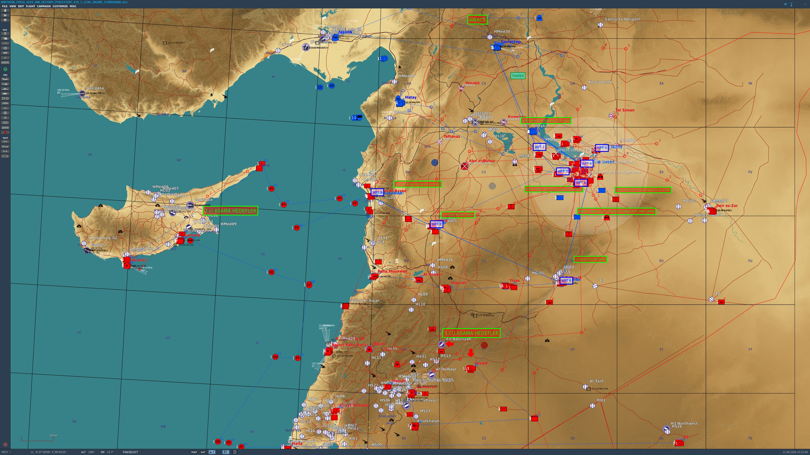

| # | Pilot | Rank | Score | Air | SAM | Armour | Ships | Captures | Assists | Landings | Shot Down | Crashes | Combat Record |
|---|---|---|---|---|---|---|---|---|---|---|---|---|---|
| 1 | Lucky 7 | VETERAN PILOT | 1506 | 3 | 8 | 0 | 0 | 1 | 3 | 12 | 3 | 0 | CHAP_TorM2 x2, HEMTT_C-RAM_Phalanx x2, MIG-29 x2, Ural-375 PBU x2, Ural-4320-31 x2, ZiL-131 APA-80 x2, ATZ-10 x1, CHAP_PantsirS1 x1, Kub 1S91 str x1, Kub 2P25 ln x1, MIG-23 x1, SA-11 Buk SR 9S18M1 x1 |
| 2 | TomcatRio | COMBAT PILOT | 260 | 2 | 0 | 0 | 0 | 0 | 0 | 2 | 0 | 0 | MIG-23 x1, TU-95MS x1 |
| 3 | Primus_TR | ROOKIE PILOT | -160 | 0 | 0 | 0 | 0 | 0 | 0 | 2 | 1 | 0 |

| Target / Action | Points |
|---|---|
| A-50 AWACS | 350 |
| Tu-95MS bomber | 150 |
| MiG-31 | 120 |
| Su-33 | 100 |
| Su-27 / MiG-29 | 90 |
| MiG-23 | 70 |
| Mi-28 / Ka-50 | 70 |
| Mi-24 | 60 |
| Mi-8 | 40 |
| S-300 64H6 search radar | 400 |
| S-300 tracking/search radar | 300 |
| S-300 command post | 250 |
| S-300 launcher | 175 |
| SA-11/Buk search radar | 250 |
| SA-11 command vehicle | 175 |
| SA-11 launcher | 150 |
| SA-6/Kub radar | 225 |
| SA-6/Kub launcher | 125 |
| SA-22 Pantsir | 180 |
| SA-15 Tor M2 | 160 |
| SA-15 Tor | 140 |
| SA-19 Tunguska | 120 |
| SA-8 Osa | 110 |
| SA-13 Strela-10 | 90 |
| SA-9 Strela-1 | 75 |
| C-RAM | 75 |
| Shilka | 60 |
| Igla | 35 |
| EWR 55G6 / 1L13 | 150 |
| BMPT | 50 |
| T-72B3 | 45 |
| T-72 | 40 |
| BMP-2 | 30 |
| BMP-1 / BMD-1 | 25 |
| BTR/APC | 20 |
| Other armed ground | 15 |
| Support / infantry | 5 |
| Carrier | 500 |
| Destroyer / frigate | 400 |
| Corvette | 250 |
| Landing ship | 200 |
| Other combat vessel | 100 |
| Airbase capture | +300 |
| Clean landing | +20 |
| Shot down | -200 |
| Accidental crash (no enemy hit) | -300 |
| Ejection | 0 |